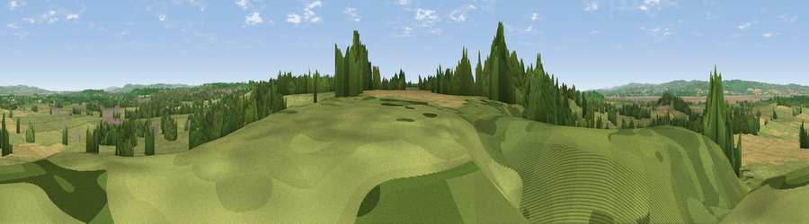

Viewpoint near Littleton-upon-Severn
#29481 in England · top 47% of its area beats it · near Littleton-upon-Severn · path 93 mWhere it is
The exact computed spot (ST 61275 90275). Click the marker for map links.
Public access: the nearest public right of way is about 93 m away — the final stretch may cross private land. Computed from Natural England's CRoW access layer and OpenStreetMap rights of way — not the legal definitive map. Always verify locally.
The view, rendered

A 360° render of this exact spot computed from the terrain model, tree cover and land cover — summer colours, afternoon light, calibrated against photographs of famous viewpoints. Real trees, hedges and buildings will differ in detail.
The panorama
Grey silhouette: terrain skyline in each direction (720 bearings, Earth curvature and refraction included). Dashed green: skyline with trees (+15 m) and buildings (+8 m) as obstacles. Blue strip: how far the ground is visible on each bearing.
Where the view opens
Wedge length = distance to the farthest visible ground on that bearing (vegetation-aware). Rings at 10, 25 and 50 km.
What fills the view
65% grassland · 17% woodland · 14% cropland · 3% water · 1% built-up
Angular shares of the visible panorama (visual magnitude), not map area. Landscape diversity 0.44 (0–1 Shannon).
Key numbers
More beautiful places nearby
The staircase of upgrades: each row has a higher view potential than everything closer. Driving times are estimates from straight-line distance, calibrated against real road routing — check an actual route before setting out.
| Place | Direction | Drive | Score |
|---|---|---|---|
| Titters Hill | W · 0 km | ~1 min | 45.2 |
| Viewpoint near Littleton-upon-Severn | WSW · 1 km | ~3 min | 52.6 |
| Viewpoint near Aust | W · 3 km | ~8 min | 59.4 |
| Viewpoint near Aust | W · 4 km | ~10 min | 60.1 |
| Viewpoint near Almondsbury | SSW · 7 km | ~15 min | 68.3 |
| Viewpoint near Hewelsfield | NNW · 11 km | ~21 min | 69.6 |
| Viewpoint near Hewelsfield | NNW · 12 km | ~22 min | 70.7 |
| Viewpoint near North Nibley | ENE · 14 km | ~26 min | 76.3 |
51.60997, -2.56062 · source: screening · position refined by local search. Computed location — check access rights before visiting.